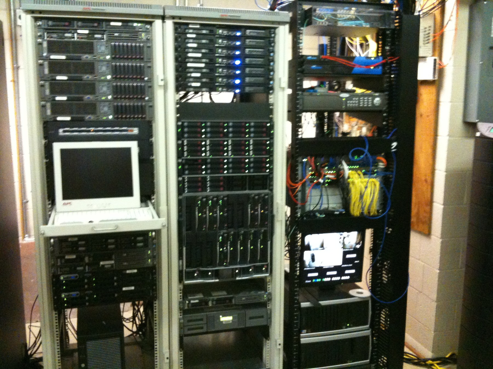
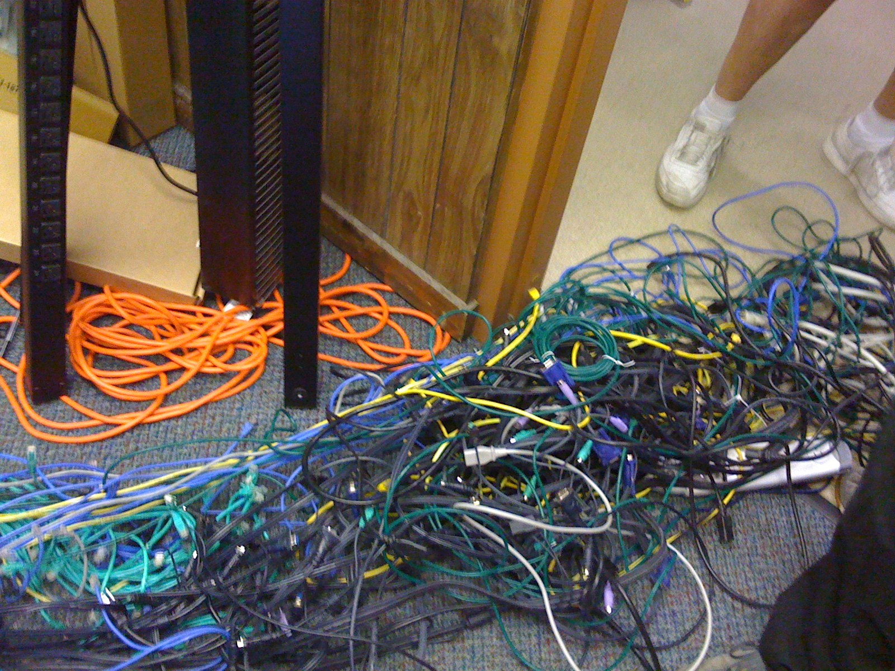
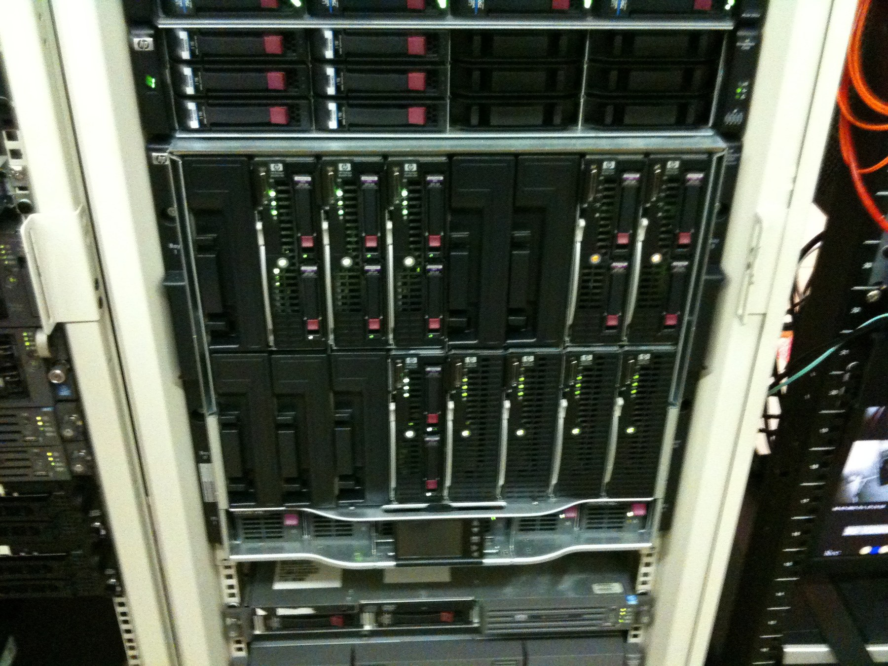
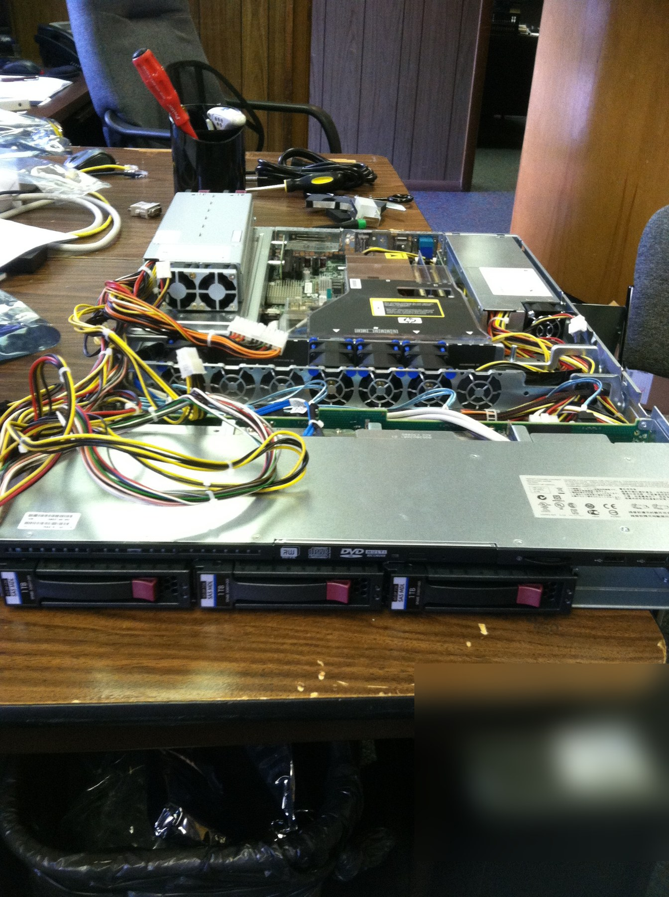

Situation
A growing manufacturing organization needed to move beyond a legacy server-room environment while keeping day-to-day operations running.
Infrastructure Modernization • Manufacturing • ERP • Early Career
I began my IT career supporting the affiliated Aluminum Ladder Company / Carbis organization. What started as day-to-day support grew into network administration and infrastructure modernization across Florence operations, the Darlington manufacturing facility, and remote personnel.
A growing manufacturing organization needed to move beyond a legacy server-room environment while keeping day-to-day operations running.
Compute, virtualization, shared storage, Windows Server services, Dynamics AX infrastructure, backup, power protection, networking, and voice communications.
A more consolidated and supportable infrastructure platform capable of carrying broader business workloads and manufacturing operations.
Then → now
Drag the control to compare the inherited server-room condition with the later operational rack environment. These are public-safe derivatives of historical project media.
The work happened around a live manufacturing business. New infrastructure only mattered if the people depending on it could keep working.

Operational
InheritedPlatform architecture
The modernization crossed the dependencies that actually made the business run.

Compute + ERP
Contemporaneous configuration exports from the environment show blade-hosted roles supporting Microsoft Dynamics AX application and SQL workloads, Exchange 2010, SharePoint, virtualized workloads, and backup services.
That mattered because the technical goal was never simply “new hardware.” The platform had to carry business-critical workloads without turning every maintenance event into an operational problem.

Operations
The job crossed servers, storage, network, power, phones, endpoint support, vendors, and the realities of manufacturing. I supported deployment and administration of an NEC UNIVERGE SV8100 PBX while continuing the broader infrastructure work.
That wider dependency view became the foundation of how I approached infrastructure later in my career: understand the operation first, then build around it.
Operating lesson
This work shaped the way I still approach infrastructure: understand the dependencies, design around the operation, and avoid solving today's problem by quietly creating tomorrow's outage.
Evidence policy: Public media and technical descriptions on this page are derived from historical source material. Credentials, internal addressing, serial numbers, account information, precise facility details, and metadata are removed or obscured. Originals remain private and unchanged.